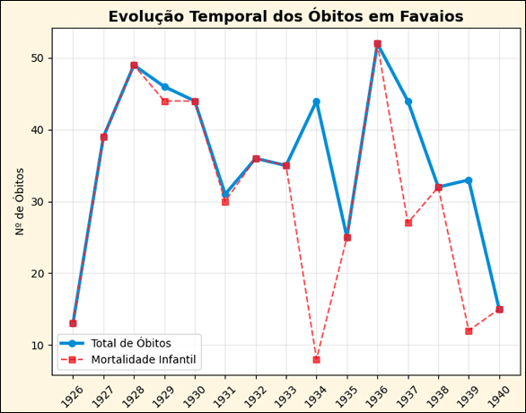
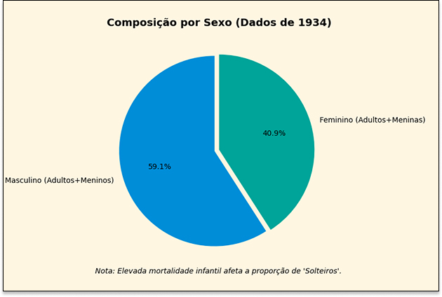
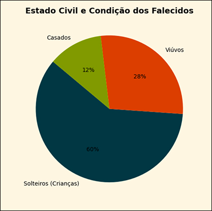

Dados históricos
Esta secção apresenta o estudo estatístico e paleográfico dos assentos de óbito registados entre os anos de 1926 e 1940. Através da transcrição e análise da edição semidiplomática do manuscrito, foi possível mapear não só a mortalidade da freguesia, mas também as condições de vida, a longevidade e as particularidades da escrita paroquial da época.


A demografia de Favaios entre 1926 e 1940 é marcada por um cenário de profundos contrastes. Por um lado, enfrentava-se uma mortalidade infantil severa, onde a maioria dos óbitos se concentrava nos primeiros anos de vida, ditando o ritmo das flutuações anuais da paróquia. Por outro, o registo de indivíduos que atingiam longevidade excecional — com o caso paradigmático de um falecimento aos 114 anos em 1934 — demonstra a resiliência de uma parte da população. A análise cronológica revela que o pico de mortalidade ocorreu em 1928, confirmando que os índices de óbitos totais eram historicamente impulsionados pelas perdas nas faixas etárias mais jovens.


O perfil social dos falecidos reflete as estruturas tradicionais de uma comunidade rural envelhecida. A elevada percentagem de solteiros é um reflexo direto da mortalidade precoce, enquanto a forte presença de viúvos e viúvas entre os adultos ilustra a realidade familiar da época. Do ponto de vista paleográfico, os dados exigem uma leitura crítica devido ao padrão de concordância masculina adotado pelo pároco; era frequente o uso de termos como 'filho' ou 'sepultado' para ambos os sexos. Esta característica do manuscrito exigiu uma normalização rigorosa na edição para garantir que a distribuição por género e condição social fosse representada com precisão histórica.